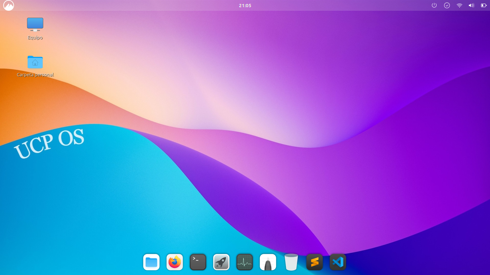

Bienvenido/a
Mi nombre es Germán Núñez y soy estudiante de la carrera de Sistemas de la Universidad de la Cuenca del Plata. Dentro de la cátedra de Sistemas Operativos me propuse la idea de crear una distribución personalizada a mi gusto de Linux, particularmente de Ubuntu. La idea principal fue desarrollar una distro que sea altamente configurable, ligera y que incluya las herramientas esenciales para programar, pero con la posibilidad de adaptarse a diversas necesidades. Es así como nace UCP-OS.

Este proyecto tiene como objetivo proporcionar una plataforma que permita a usuarios de distintos niveles, desde principiantes hasta avanzados, aprovechar al máximo las capacidades de Linux.